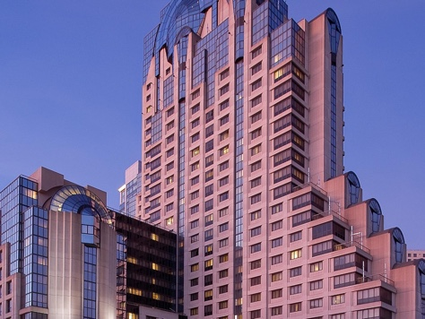
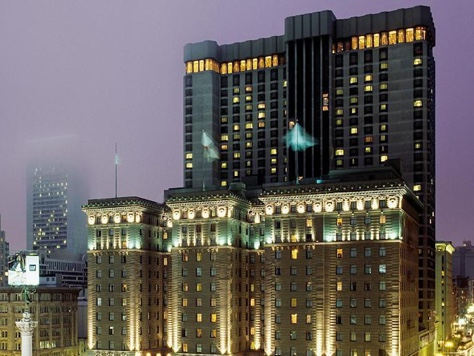
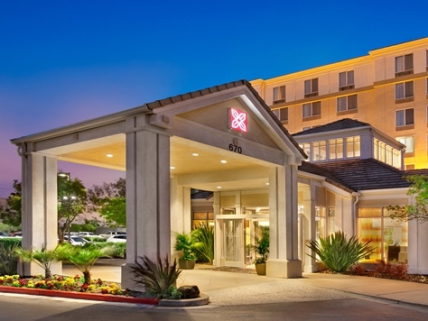

SAN FRANCISCO MARRIOTT MARQUIS
The San Francisco Marriott Marquis (on 4th Street) is close to shopping, restaurants, and other downtown attractions. Even if you don't stay here, we recommend taking a trip to The View Lounge on the 39th floor, where there are great views of the entire city.

WESTIN ST. FRANCIS
The Westin St. Francis directly overlooks Union Square, with cable cars passing outside the front door.

HILTON GARDEN INN SFO NORTH
This hotel is a more affordable option, situated just north of San Francisco International Airport. (N.B. This hotel is a more costly taxi ride to and from the wedding. Make sure to stay at the "Airport North" hotel, not the "Burlingame" hotel.)
